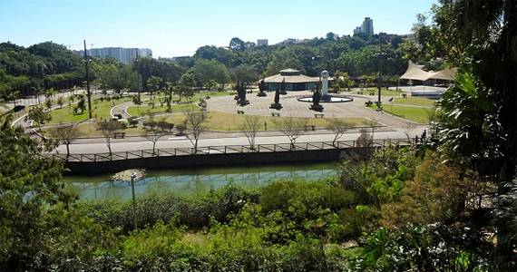

São Caetano do Sul
A “Cidade Modelo” do Brasil
História
São Caetano do Sul tem origem no século XVII, quando os padres carmelitas espanhóis fundaram a Fazenda São Caetano, utilizada para atividades agrícolas. A região permaneceu rural até o século XIX, quando a chegada da estrada de ferro São Paulo Railway e a instalação de indústrias deram início ao crescimento urbano.
Em 1948, a cidade se emancipou oficialmente de Santo André e passou a ser um município independente. Desde então, São Caetano ganhou fama por sua qualidade de vida, desenvolvimento urbano e forte presença industrial.
Pontos turísticos
Apesar de ser a menor cidade do Brasil em extensão territorial (com cerca de 15 km²), São Caetano do Sul oferece diversos pontos interessantes:
• Parque Espaço Verde Chico Mendes – o maior parque da cidade, com lagos, trilhas, playgrounds e áreas para piquenique.
• Teatro Paulo Machado de Carvalho – palco de peças, shows e eventos culturais.
• Museu Municipal de São Caetano do Sul – guarda parte da memória e história local.
• Estádio Anacleto Campanella – casa do São Caetano Futebol Clube, que já viveu momentos históricos no futebol brasileiro.
• Praça Cardeal Arcoverde – tradicional ponto de encontro, especialmente durante festividades.
Curiosidades
• É considerada uma das cidades com melhor IDH (Índice de Desenvolvimento Humano) do Brasil, frequentemente chamada de “Cidade Modelo”.
• Mesmo sendo pequena em território, é altamente desenvolvida e urbanizada, com uma das melhores redes de saúde e educação do país.
• Tem forte influência da imigração italiana, refletida na cultura, arquitetura e gastronomia.
• Foi destaque nacional no futebol com o São Caetano, que chegou à final da Libertadores da América em 2002.
Cultura e Gastronomia
São Caetano é marcada por festas tradicionais, como a Festa Italiana de São Caetano, que celebra a herança cultural dos imigrantes. A cidade também investe em atividades culturais com teatros, centros culturais e eventos comunitários.
Na gastronomia, predominam restaurantes italianos e cantinas familiares, mas também há opções modernas e variadas. A culinária reflete bem a fusão entre tradição e modernidade que caracteriza a cidade.
Voltar